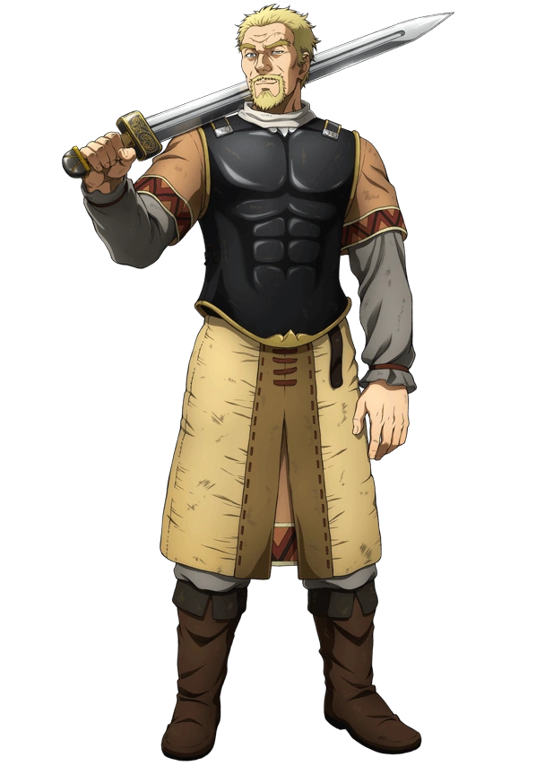
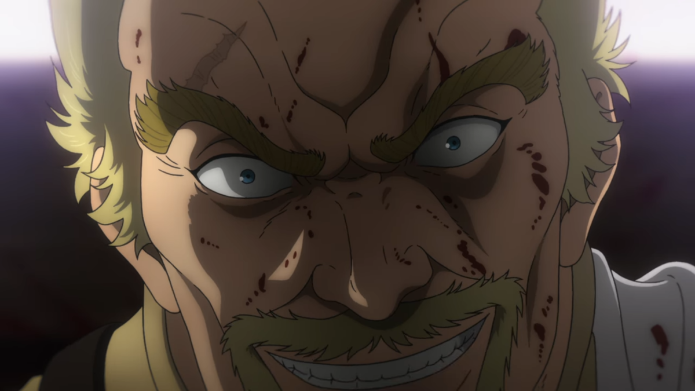
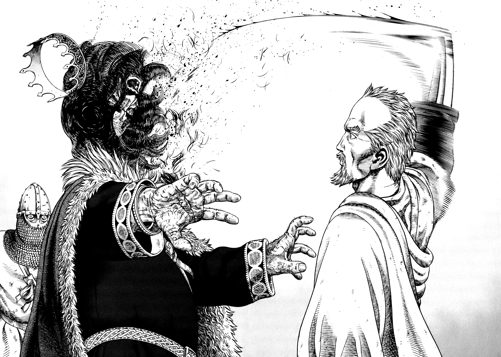

Askeladd
About Askeladd
Askeladd, whose real name is Lucius Artorius Castus, was a Welsh-Danish Viking who commanded a mercenary band of Vikings, which Thorfinn followed for over a decade. He was a major antagonist of the War Arc, due to Thorfinn's goals.
Askeladd claimed he was a descendant of the legendary warrior Lucius Artorius Castus through his mother's side. The latter idolized Artorius's story and named her son after him. The nickname "Askeladd” came from "Ashen Lad," as he was constantly covered in ash from various jobs as a child.
He was contracted by Floki to assassinate Thors and was afterwards followed for over a decade by a vengeful Thorfinn, who wished to kill his father's killer honourably and begrudginly performed jobs for Askeladd's band in order to earn duels with him. After a majority of his band was wiped out by Thorkell, Askeladd pledged his service to Canute to achieve his secret goal of keeping Wales safe from Viking invasions.
Appearance
Askeladd's other features include heavy eyelids (which make his unimpressed facial expressions particularly obvious), prominent cheekbones, sunken cheeks, an aquiline nose and a creased brow. He is often shown frowning, cocking one eyebrow, and/or wearing a sly smirk, often showing teeth. Adult Askeladd is typically pictured in the same warrior's outfit: a light, cowl-neck gambeson with detailing on the sleeve fringes (hooded and red in some of the anime), belted over a dark long-sleeved shirt tied at the wrists, dark trousers, and dark boots hitting right below the knee. He typically wears an impressive dark breastplate, reminiscent of the Roman tradition, as well as a scabbard and his sword at his left hip. He occasionally wears a dark capelet and gloves, and a heavier long cape in colder weather.
As he grows older throughout the series, Askeladd's widow's peak becomes more pronounced as his hair thins, leading Thorfinn to occasionally call him names such as "baldy" and "pointy hair". His face also becomes more heavily lined as he approaches his mid-40s. After the battle against his own men, he gains a visible scar above his right eye.
Personality
Askeladd is a sly, manipulative, cunning and charismatic man. Being an excellent Swordsman, he is a great fighter, his biggest strength however lies in his intelligence and ability to strategize and adapt, a skill bolstered by his ability to know what kind of person someone is simply by looking at their face. He is quick to act and seize what he wants, yet slow to anger. As a captain, his bands look up to him as a bold and lucky person worthy of leading.
As a Viking, Askeladd seems to hold remuneration and riches in high esteem, whether it be for their own sake, for amusement, or as a means to an end. He is not above using underhanded methods to reach his goals, even if that includes breaking a Warrior's Oath. He uses violence and murders with no hesitation if it is of benefit to him and his plans. He is often cold-hearted: unbothered by seeing his own men dying in battle (or by having to kill them himself after they turn on him); coldly ordering the massacre of an entire village full of defenseless people; denying a dying man's last request after ordering his assassination; and seemingly not caring if Thorfinn dies.
When Bjorn tells Askeladd he just wanted to be his friend, Askeladd allows him to know he really was his only friend before he dies. After being forced to kill King Sweyn in order to save both Canute and Wales, a fighting Askeladd yells at Thorfinn to stay out of things, a moment of inattention that costs him his life. His last words to Thorfinn are wise advice rather than taunts. He tells him to let go of things and move on, and that his real battle is to be a true warrior and go farther than Thors did.
Abilities
 Master swordsman:Askeladd was a highly skilled swordsman, displaying a talent for this at age 11, when he defended his mother from his father Olaf. Despite being middle-aged at the time of his death, he survived combat against multiple opponents at once, including King Sweyn's royal guards.
Ranged weapons:Askeladd had skill with throwing hatchets and throwing knives, although they were not his primary weapons.
Leadership skills:Askeladd is also a master tactician as well as a skilled politician. His ability to manipulate those around him turned a horde of pirates and raiders into a close-knit group wholly loyal to him. He has shown himself capable of turning enemies into allies, as seen with Thorfinn, Thorkell, and Prince Canute. Askeladd could also instantly read a man just by looking at his face, an ability he claimed to have picked up from living 40 years among wicked men.